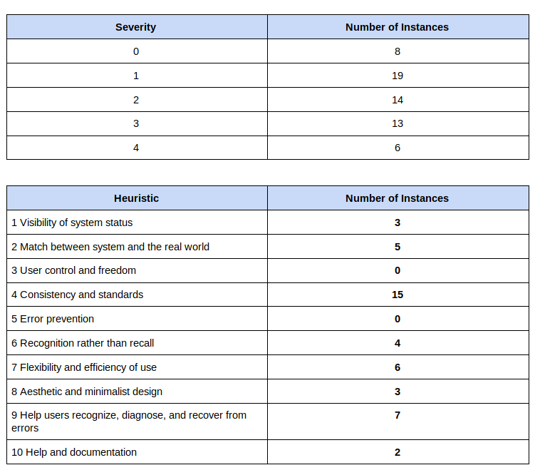

Design Refinement
What is your design? How does it work?
We designed a budgeting app for young adults with a focus on proactivity through user self-goals and customizable categories.
When a user uses the app for the first time, they create an account where they enter demographic information and create their base budget by choosing categories, setting budget values, and linking bank accounts. The app has a central home page that acts as a hub for other functions and pages. Users can create goals in different areas such as savings, debt, income, and general budget goals. The goal section helps to give the user agency by picking their own goals and allows them to self-check whether or not some of these goals were met with the purpose of increasing proactivity.
When a user makes a transaction from a linked credit or debit card, they will receive a notification on their phone which directs them to categorize the purchase. If they have already made a similar purchase, the app will attempt to auto categorize the transaction; if not, the user can add it to an existing category or create a new one.

Existing alternatives to our app generally do a lot to display prior expense information but rarely have any functionality to improve future behavior. They are reactive rather than proactive. They help users visualize a budget but lack at helping users plan forward and take part in their own budgeting experience. In user interviews, people complained that existing apps would store your purchases, cough up a graph at the end of the month, and do little to actually change your spending habits. As such, we decided to implement a “goals” functionality to improve the impact of our application.
What changed, and why did you change it?
Tradeoffs you made in bringing it online:
There was a lot of utility to bringing our prototype into the digital space. We used Adobe XD to transform our wireframe sketches in digital wireframes. Using XD allowed us to iterate quickly and start to explore the thematic design of our app. After deciding on a basic design template, our team each created a wireframe for one part of the app and then we compiled it into one large wireframe. This led to a some inconsistency in our design. Although we had a basic design guide for layout and fonts and such, we had several types of buttons, sizings, and section layouts. While the paper prototyping also had issues with consistency, the ability to edit concurrently was helpful to orient all of our team.
In the digital format, we used the prototype feature of XD to make and visualize the connections between features and pages. This greatly helped us organize our interaction flow and highlighted some gaps in functionality. Specifically, in the goals area, we found there was function lacking in the versatility of our design. Users could only view a few goals, even though they have many general, short-term, long-term, value-based, and qualitative goals that were not captured in our app.
Though the digital prototype was helpful to clarify many high-level design questions, there was some utility lost in the design front. We had mostly limited ourselves based on our knowledge of the tool -- which was minimal for most of us -- and animations, transitions, and responsive feedback are all outside the scope of XD. It perhaps kept us from being truly creative with the design details, but for now we are fine with that compromise because we can always add more in later. Overall, XD helped us do what it was meant to do -- create a fully developed proof of concept & wireframe.
Down-scoping of your project:
At the beginning of our project, we planned to have very aesthetic and polished app. Many unsuccessful budgeting apps commonly had tables, graphs, and text with dull colors and bricky design, as well as often having too many details, based on the research we conducted during inspirational design. Over the past phases, we decided to have simple and easily comprehensible information about your current budget status, since young adults want simplicity in their finances. Including a lot of information on your app can be nice, but also overwhelming. For example, many apps have way too many categories that might be useful for an older user (like mortgage or retirement savings), but aren’t useful for a young adult in college. The main things the user needs from the budgeting app is 1) how much money can the user spend without affecting any major transactions that must happen (e.g. paying car insurance) and 2) how does the user spend their money and how can they improve their spending habits? To satisfy such purposes of using budgeting app, not much of information are necessary. Therefore, we planned users can easily approach essential information such as a list of recent transactions, their money left on their budget, how much money can they spend on any category while hiding unnecessary information by getting rid of tables, graphs and majority of texts. We planned to display such essential information in polished way. By doing so, users can get the impression of having the finest app in their phone while not having much of information aversion. However, making the most polished app is not necessary. The most important feature about our app is solving ‘displaying too much information and it is not easy to track down all information that I was given’ and we should focus on the main functionality, instead of making our app look polished as much as possible. Making our app aesthetically pleasing may help tackling the information aversion, but not at the significant level. We will still try to make our app polished, but since it does not affect significantly to the purpose of our budgeting app, therefore we decided to down-scope the app’s polishness.
Responses to paper prototyping user feedback
One of the most common suggestions during user feedback concerned consistency of certain interface elements. Since we had all worked on separate parts of the app, these were some of the most significant problems, especially where navigation was concerned.
For instance, there was some confusion over the icons we originally used in our paper prototype. When the users were asked to navigate through different features of the app, they were confused what the displayed icons mean. One user said that “the flag icon looks an error flag” rather than representing goals. We thought it was obvious and intuitive, but users expressed concerns about replacing texts with icons, such as the unclear icons representing each category on the main graph. Therefore, for the clickable prototype, we made the decision to instead use a hamburger menu with text options, since our functionalities were specific enough that it was difficult to ensure symbols were intuitive and unambiguous.
Additionally, the placement, look, and presence of a “back” button was highly inconsistent between screens. There were certain pages with no means to navigate backward, which we quickly noticed during user testing.In navigational confusion, one user queried, “ How do I go back, oh I can’t...” and got stuck in the assigned task. Especially, iPhone users don’t have any back button on the device therefore they could not navigate through our app at all, which could be a design hazard. Therefore, we added back button and for the clickable prototype, we put more effort to making the look and placement of such elements more uniform.
More broadly, our paper prototype lacked consistency and cohesion between sections, so this was one of our primary focuses for the construction of the clickable prototype.
Responses to team-internal deliberations
After creating the goals section of our wireframe, we realized there was confusion between the goal and budget functions. We were concerned that the goals section doesn’t offer any new functions beyond the budgeting section. If a user were to create a budget to “spend $50 less on groceries this month,” we weren’t sure if that would be a goal or budget and thus what would be the point of having goals.
We discussed the possibility of having goals be more proactive and not be automatic. They would function as more of a note/task that can be checked off. For instance a user could make a goal of, “Buy less coffee to save money,” and simply check off the box when the they think the goal is met, which makes it more of a user-driven process. This checking off of goals would allow the user to feel more in control and more of a ‘hero’ of their budgeting experience. Obviously, this method could not work if the user just ignores their goals or checks them off before they are really complete, so we will have to discuss this concern as we design the next prototype.
For this first wireframe, we decided to have goals that are useful and not redundant would be to split them into sections, budget, income, debt, and savings goals. From the paper prototyping, one user said ““I would love to see my income distinct from my expenses, and actually look at that trend over time,” so we chose to show that in the goals. We think the goals section is important to help users be proactive, so we will have a continued focus on better implementing this function and learning through user testing.
We also did a cognitive walkthrough of our app which helped us pinpoint the flow and function of our app. By creating a flowchart mapping of our app and walking through different tasks, we noticed some obvious dead ends and necessary flows that we had not thought of. The ‘Edit Budget Category Values’ section only had one input from one page but we decided users would need to change and edit values at different pages and locations within the app so we added more flows. We also decided that the set-up process would be optional in case the user wanted to explore the app first before deciding on all of their categories and budget. The user can access this again through the settings.
Responses to heuristic evaluation feedback
Make it more clear how the user can add new categories, goals, and transactions from the home screen.
To respond to this feedback, we will adding an “edit budget” page, where the user can edit the limits of their budget, edit category names, and add categories. We also realized while doing our cognitive walkthrough, that the only place a user could edit their budget is during the set-up process. After we add the “edit budget” page, the user will be able to reach this page from a consistent button or menu item.
The goals section is ambiguous. It’s unclear what goals mean, how to set new goals, and what users should do with goals.
The goals page is one of our hardest decisions. We have discussed in depth what the page should mean — we want to distinguish these types of goals from budget limits, so we tried to make them more overarching rather than direct budgeting goals. Moving forward, we are going to focus on making the goals section more useful and making sure there is a way for the user to add goals and be proactive about goals.
Color and overlays sometimes obscure information or lead user to wrong conclusions.
For color, there was a few minor comments about how the yellow color we chose is hard to see. On the transactions page, our evaluators said that color felt like it was ranking categories, not just showing different categories. For overlays, there are some pop-ups that obscure information that is used to fill out the pop-up. For example, we got feedback that when a user edits a budget value, the pop-up to type in a number covers the rest of the values. We need to make sure the numbers aren’t covered because a user might want to see all of the budget values while setting a new value to compare them.
Re-categorize on the recent transactions page
Our evaluators were confused that you couldn’t categorize right on the recent transactions page. As a team, we talked about this and decided that we will allow you to re-categorize on this page; however, we haven’t decided how you will add or edit a category from this page — that may still be a functionality on the categorization page only.
Make the setup process clearer
Overall, our heuristic evaluation said that the process to set-up your account was not entirely clear. For example, when selecting your categories, “more” and “add category” buttons look just like the regular category button, so we will be making them look different. Also, when setting the budget values, the evaluators were unsure about applying average values to your budget items. They did not know if the checkmark button was just showing you the average values or applying them.
Be more consistent about the menu icon and the back button
Our heuristic evaluation noted that the hamburger menu icon was not present on all pages. We will make sure this is consistent on every page. Also, they noted that the back button didn’t always bring the user to the previous page, either it did not go back at all or it went back to an intuitive page.
Key Insights
The biggest development we had this phase was the clarification of our value statement. That is, why our design is unique and desirable. After a considerable amount of conversation and user testing, we came to the conclusion that it consisted of three things:
Action-oriented Design: the design will engage users with their information to make proactive decisions rather than be a reactive tool
Community transparency: we will create a space that demystifies money and allows users to learn from each other through example budgets
Goal-based progressby orienting the app towards goals and progress rather than gains and losses, we will create a positive association with the design and ease the difficulty of these money-related tasks
With this new understanding, and other tools created in this phase such as the cognitive walkthrough and heuristic evaluation, we were able to evaluate our current design and redirect it to stay consistent with these values. Though a good deal of progress needs to be made on all three points, our first priority moving forward is the resolution of our goals section because that will inform how the other components are integrated. It is also the only explicit design feature that users can interact with, and received a lot of feedback during the heuristic evaluation (1 and 2 from the section above). The current design is a basic shell of what we’d like it to be as it simply tracks quantitative goals that are formatted to fit the budget program. We will work next phase to add in qualitative and non-amount based goals to allow for increased adaptability.
Questions and Shortcominngs
One of the biggest questions for our project is the goals section. We need to revisit what young adults might want to set as goals or what overall statistics they might want to track. We had a long discussion about the goals page after sketching some initial wireframes and running into this question. For now, we have the goals section split into sections like income, saving, debt, and budget. We may also add more quick user-oriented goals that one can check off to stay more proactive with goals, like “Only order takeout once this week”. The larger goals liek income and savings may not be super useful for a young adult who does not have much of either one, so we will discuss the goal page changes in depth moving forward. To investigate this in the next phase, we also might do some quick user testing on that section of the app to ask about goal-setting.
A shortcoming for our app that was uncovered by the cognitive walkthrough is the overall user workflow. We realized we need to make things like editing categories simpler and intuitive, as well as helping the user clearly understand where they can go to perform specific actions. We improve the flow slightly from the paper prototype by adding a hamburger menu, but there is still work to be done on helping the user understand where they are in the app and how to get to the next place.
Future Plans
For next phase, we want to improve our design in the following ways:
More thoroughly define gray areas - Some aspects of our app, including the goals functionality and adding cash purchases, are still only partially defined. In an effort to produce a better user experience, we need to examine what potential users want out of these features, how they affect the core use of our app, and how to maximize their value to the experience.
Reconsider navigation and workflow - After getting feedback from Team Spatula and doing a cognitive walkthrough, we found room for improvement in overall workflow. We want to carefully consider the pros and cons of different navigation methods, like the menu, and how they affect the user’s ability to find certain functionalities.
Improve visual consistency and quality - Although a significant improvement from our paper prototype, our clickable prototype still has a number of visual inconsistencies that could negatively impact the experience as a whole. Furthermore, moving forward, we should be very deliberate with our use of symbols and text, and make sure that all information on screen is simple but unambiguous.

Our diagram representing cognitive walkthrough
Heuristic Evaluation for Ladle
Summary of Feedback

Specific Analyses
Check Heuristic Evaluation page for specific analyses on our prototype